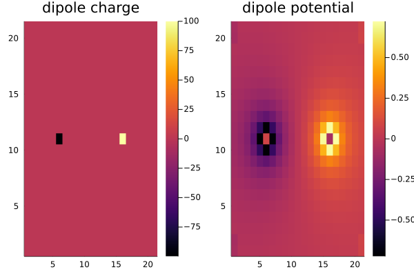
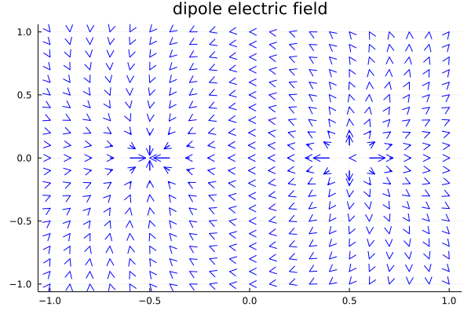
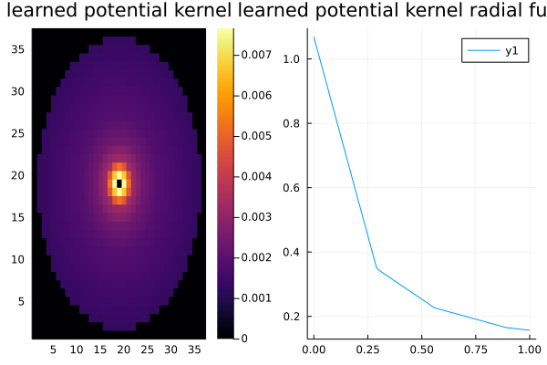
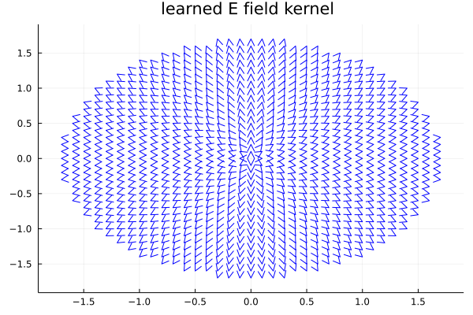

Operators basics, machine learning, inverse problems
DIR = joinpath(pwd(), "../../src")
"""
Finite difference calculation & machine learning of electric potential & electric field from charge
"""
using LinearAlgebra
using Plots
using Random
using Flux
Random.seed!(1)
include("$DIR/operators.jl")
# make grid
dims = 2
dx = 0.1
cell = dx * Matrix(I, dims, dims)
rmax = 1.0
grid = Grid(cell, rmax)
# make operators
rmin = 1e-9
rmax = sqrt(3)
ϕ = Op(r -> 1 / (4π * r), rmin, rmax, cell)
E = Op(r -> 1 / (4π * r^2), rmin, rmax, cell; l = 1)
▽ = Op(:▽, cell)
# put dipole charges
ρf = zeros(size(grid)..., 1)
put!(ρf, grid, [0.5 0.0; -0.5 0.0]', [1.0 -1]'')
# calculate fields
Ef = E(ρf)
ϕf = ϕ(ρf)
# test
rvec = [0, 0]
@show get(ϕf, grid, rvec), [0.0]
@show get(Ef, grid, rvec), get(-▽(ϕ(ρf)), grid, rvec), [-2 / (4π * 0.5^2), 0]
p = []
push!(p, heatmap(ρf[:, :, 1]',title = "dipole charge"), )
push!(p, heatmap(ϕf[:, :, 1]', title = "dipole potential"),)
plot(p..., layout = length(p))
savefig("d1.svg");
# @unpack x, y=grid
x = grid.coords[:, :, 1]
y = grid.coords[:, :, 2]
s = 1e-2
u = s * Ef[:, :, 1]
v = s * Ef[:, :, 2]
x, y, u, v = vec.([x, y, u, v])
quiver(x, y, quiver = (u, v), c = :blue, title = "dipole electric field")
savefig("d2.svg");
##
# make neural operators
ϕ_ = Op(Radfunc(), rmin, rmax, cell)
E_ = Op(Radfunc(), rmin, rmax, cell; l = 1)
ps = Flux.params(ϕ_, E_)
function loss()
remake!(E_)
remake!(ϕ_)
global E_f = E_(ρf)
global ϕ_f = ϕ_(ρf)
@show l = (nae(E_f, Ef) + nae(ϕ_f, ϕf)) / 2
l
end
data = [()]
loss()
opt = ADAM(0.1)
Flux.@epochs 50 Flux.train!(loss, ps, data, opt)
## plot
p = []
push!(p, heatmap(ϕ_.kernel[:, :, 1], title = "learned potential kernel"))
r = 0:0.01:1
push!(
p,
plot(r, ϕ_.radfunc.(r), title = "learned potential kernel radial function"),
)
plot(p..., layout = length(p))
savefig("ml1.svg");
x = E_.grid.coords[:, :, 1]
y = E_.grid.coords[:, :, 2]
s = 1e-2
u = s * E_.kernel[:, :, 1]
v = s * E_.kernel[:, :, 2]
x, y, u, v = vec.([x, y, u, v])
quiver(x, y, quiver = (u, v), c = :blue, title = "learned E field kernel ")
savefig("ml2.svg");(get(ϕf, grid, rvec), [0.0]) = ([6.315935428978668e-17], [0.0])
(get(Ef, grid, rvec), get(-(▽(ϕ(ρf))), grid, rvec), [-2 / ((4π) * 0.5 ^ 2), 0]) = ([-0.6366197723675809, -4.0129062673743836e-17], [-0.6631455962162306, 1.4130336505518238e-16], [-0.6366197723675814, 0.0])
l = (nae(E_f, Ef) + nae(ϕ_f, ϕf)) / 2 = 1.359662108295491
[ Info: Epoch 1
l = (nae(E_f, Ef) + nae(ϕ_f, ϕf)) / 2 = 1.359662108295491
[ Info: Epoch 2
l = (nae(E_f, Ef) + nae(ϕ_f, ϕf)) / 2 = 1.7958328475648064
[ Info: Epoch 3
l = (nae(E_f, Ef) + nae(ϕ_f, ϕf)) / 2 = 1.2567461636988502
[ Info: Epoch 4
l = (nae(E_f, Ef) + nae(ϕ_f, ϕf)) / 2 = 0.7829020856403123
[ Info: Epoch 5
l = (nae(E_f, Ef) + nae(ϕ_f, ϕf)) / 2 = 1.0045667814551376
[ Info: Epoch 6
l = (nae(E_f, Ef) + nae(ϕ_f, ϕf)) / 2 = 0.7561379245962376
[ Info: Epoch 7
l = (nae(E_f, Ef) + nae(ϕ_f, ϕf)) / 2 = 0.5828479045990985
[ Info: Epoch 8
l = (nae(E_f, Ef) + nae(ϕ_f, ϕf)) / 2 = 0.4473006861464698
[ Info: Epoch 9
l = (nae(E_f, Ef) + nae(ϕ_f, ϕf)) / 2 = 0.7736525044408767
[ Info: Epoch 10
l = (nae(E_f, Ef) + nae(ϕ_f, ϕf)) / 2 = 0.4860272257658499
[ Info: Epoch 11
l = (nae(E_f, Ef) + nae(ϕ_f, ϕf)) / 2 = 0.9115197261212222
[ Info: Epoch 12
l = (nae(E_f, Ef) + nae(ϕ_f, ϕf)) / 2 = 0.8769399197082046
[ Info: Epoch 13
l = (nae(E_f, Ef) + nae(ϕ_f, ϕf)) / 2 = 0.5276290395720996
[ Info: Epoch 14
l = (nae(E_f, Ef) + nae(ϕ_f, ϕf)) / 2 = 0.5212223796908367
[ Info: Epoch 15
l = (nae(E_f, Ef) + nae(ϕ_f, ϕf)) / 2 = 0.6287477679421893
[ Info: Epoch 16
l = (nae(E_f, Ef) + nae(ϕ_f, ϕf)) / 2 = 0.5195900425994866
[ Info: Epoch 17
l = (nae(E_f, Ef) + nae(ϕ_f, ϕf)) / 2 = 0.4047824850063634
[ Info: Epoch 18
l = (nae(E_f, Ef) + nae(ϕ_f, ϕf)) / 2 = 0.48533472879211403
[ Info: Epoch 19
l = (nae(E_f, Ef) + nae(ϕ_f, ϕf)) / 2 = 0.49747812140953007
[ Info: Epoch 20
l = (nae(E_f, Ef) + nae(ϕ_f, ϕf)) / 2 = 0.4020198472323327
[ Info: Epoch 21
l = (nae(E_f, Ef) + nae(ϕ_f, ϕf)) / 2 = 0.38705642050171596
[ Info: Epoch 22
l = (nae(E_f, Ef) + nae(ϕ_f, ϕf)) / 2 = 0.41570868925639815
[ Info: Epoch 23
l = (nae(E_f, Ef) + nae(ϕ_f, ϕf)) / 2 = 0.2829794459083861
[ Info: Epoch 24
l = (nae(E_f, Ef) + nae(ϕ_f, ϕf)) / 2 = 0.4186094311616757
[ Info: Epoch 25
l = (nae(E_f, Ef) + nae(ϕ_f, ϕf)) / 2 = 0.35136669933176
[ Info: Epoch 26
l = (nae(E_f, Ef) + nae(ϕ_f, ϕf)) / 2 = 0.2656531255061076
[ Info: Epoch 27
l = (nae(E_f, Ef) + nae(ϕ_f, ϕf)) / 2 = 0.27465935070875513
[ Info: Epoch 28
l = (nae(E_f, Ef) + nae(ϕ_f, ϕf)) / 2 = 0.21630904696924058
[ Info: Epoch 29
l = (nae(E_f, Ef) + nae(ϕ_f, ϕf)) / 2 = 0.2518748647662491
[ Info: Epoch 30
l = (nae(E_f, Ef) + nae(ϕ_f, ϕf)) / 2 = 0.20515965201470893
[ Info: Epoch 31
l = (nae(E_f, Ef) + nae(ϕ_f, ϕf)) / 2 = 0.23598844775397626
[ Info: Epoch 32
l = (nae(E_f, Ef) + nae(ϕ_f, ϕf)) / 2 = 0.2019975405960354
[ Info: Epoch 33
l = (nae(E_f, Ef) + nae(ϕ_f, ϕf)) / 2 = 0.23955779531646987
[ Info: Epoch 34
l = (nae(E_f, Ef) + nae(ϕ_f, ϕf)) / 2 = 0.23627199803648585
[ Info: Epoch 35
l = (nae(E_f, Ef) + nae(ϕ_f, ϕf)) / 2 = 0.172371528809804
[ Info: Epoch 36
l = (nae(E_f, Ef) + nae(ϕ_f, ϕf)) / 2 = 0.22114609897950888
[ Info: Epoch 37
l = (nae(E_f, Ef) + nae(ϕ_f, ϕf)) / 2 = 0.1674260918417994
[ Info: Epoch 38
l = (nae(E_f, Ef) + nae(ϕ_f, ϕf)) / 2 = 0.25693446233115025
[ Info: Epoch 39
l = (nae(E_f, Ef) + nae(ϕ_f, ϕf)) / 2 = 0.25715766866559625
[ Info: Epoch 40
l = (nae(E_f, Ef) + nae(ϕ_f, ϕf)) / 2 = 0.14301943859412436
[ Info: Epoch 41
l = (nae(E_f, Ef) + nae(ϕ_f, ϕf)) / 2 = 0.2398023915630551
[ Info: Epoch 42
l = (nae(E_f, Ef) + nae(ϕ_f, ϕf)) / 2 = 0.23847901176496517
[ Info: Epoch 43
l = (nae(E_f, Ef) + nae(ϕ_f, ϕf)) / 2 = 0.16438479879652917
[ Info: Epoch 44
l = (nae(E_f, Ef) + nae(ϕ_f, ϕf)) / 2 = 0.2243483887218622
[ Info: Epoch 45
l = (nae(E_f, Ef) + nae(ϕ_f, ϕf)) / 2 = 0.23635408993988707
[ Info: Epoch 46
l = (nae(E_f, Ef) + nae(ϕ_f, ϕf)) / 2 = 0.15232268268935575
[ Info: Epoch 47
l = (nae(E_f, Ef) + nae(ϕ_f, ϕf)) / 2 = 0.20785553924837494
[ Info: Epoch 48
l = (nae(E_f, Ef) + nae(ϕ_f, ϕf)) / 2 = 0.23238776782207893
[ Info: Epoch 49
l = (nae(E_f, Ef) + nae(ϕ_f, ϕf)) / 2 = 0.20961002431066164
[ Info: Epoch 50
l = (nae(E_f, Ef) + nae(ϕ_f, ϕf)) / 2 = 0.15995206096923792   